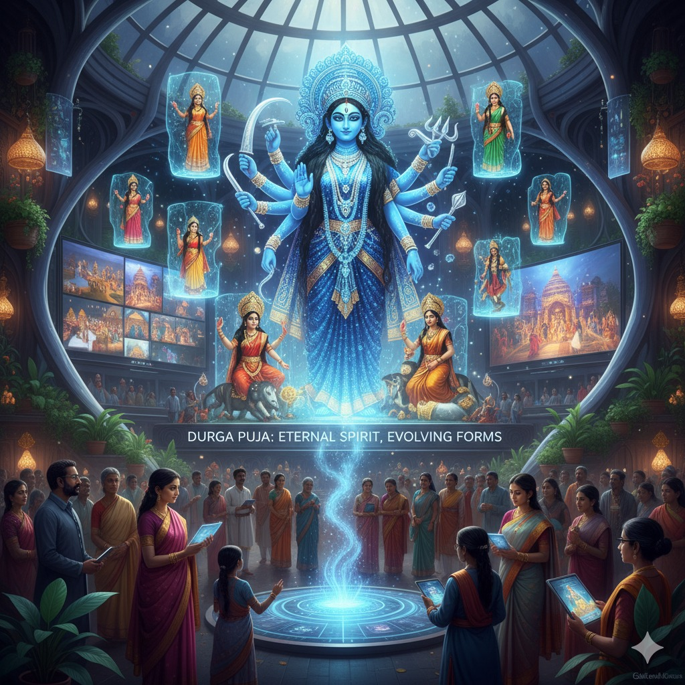

Durga Puja In The Hearts Of Tomorrow
Durga puja is not only a religious festival but also a celebration of art, cultural and community. For generations, this puja has created a strong bond among all the people of India, as well as the whole world, for all the Indians who live in foreign.
Durga Puja acts like a string of bond that pulls them to come home once. In this current scenerio, technological revolution and artificial intelligence are reigning all over the world, so there might arise a question, “Can Durga Puja hold its glory in the upcoming years?” And my answer is ‘yes’. The future generation will also continue to build emotional bonds with this festival, though the expressions may evolve with time. Goddess Durga is the symbol of timeless power, valor and pride. Without her blessings, no auspicious work can be initiated.
Durga Puja is a holy tradition that can not be erased until the universe is coming to an end. Future generation may experience Durga Puja in new forms- digital platforms, virtual pandal tours or eco-friendly celebrations. Yet the essence will remain the same. Devotion to Goddess Durga, togetherness of families and the spirit of victory of good over evil will continue unaffected
This timeless connection ensures that Durga Puja will continue to inspire emotions of joy, unity and cultural continuity for centuries to come.
← Back to This Year’s Articles